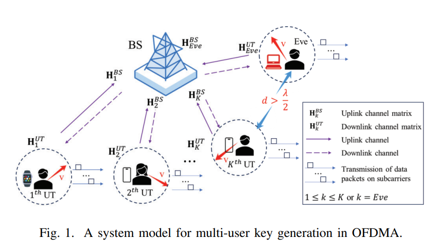
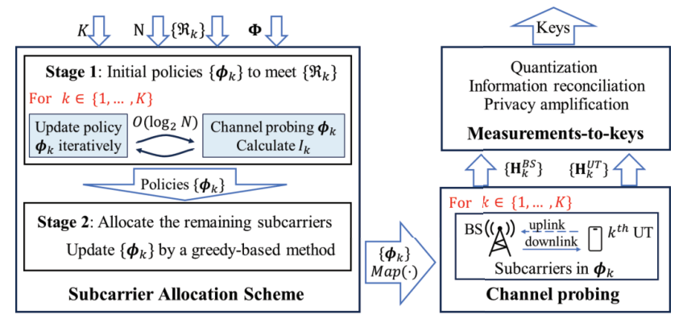
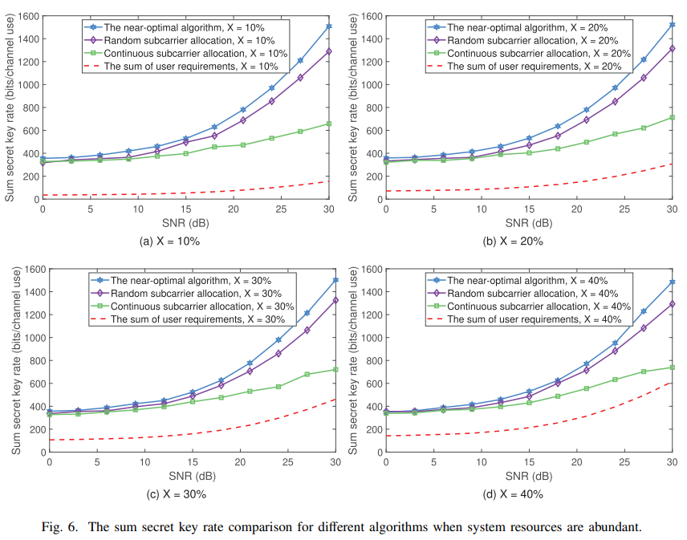

OFDMA 网络中物理层密钥生成的最优子载波分配方案
📌 摘要
本文研究多用户 OFDMA 网络中增强型物理层密钥生成（PKG）问题。实际 OFDMA 系统中，不同子载波之间存在频率相关性，这会导致生成密钥的随机性下降以及系统总密钥速率降低。针对这一问题，本文证明了子载波分配在提升 OFDMA 网络 PKG 性能中的关键作用，并从理论上证明：当单个用户终端（UT）选取有限数量的子载波用于密钥生成时，采用均匀间隔子载波是最优策略，可最大程度抑制频率相关性的负面影响，从而获得更高的密钥速率和更好的密钥随机性。此外，本文推导了总密钥速率的闭合表达式，并设计了一种低复杂度近最优算法，可在满足所有用户安全需求的前提下，高效求解子载波分配优化问题。仿真结果表明，与现有随机和连续子载波分配算法相比，所提方案分别将总密钥速率提升了 9.93% 和 40.59%，并显著改善了密钥随机性。
💡 核心贡献
- 频率相关性对PKG性能影响的理论分析。 本文首次在OFDMA多用户场景下系统分析了子载波间频率相关性对密钥生成性能的双重影响：一方面降低了生成密钥的随机性（影响NIST测试中的二进制矩阵秩检验、离散傅里叶变换检验、串行检验和近似熵检验等四项测试）；另一方面减小了有效密钥空间，进而降低了总密钥速率。这一分析填补了现有文献的空白。
- 均匀间隔子载波最优性的严格证明（Theorem 2）。 利用Pearson相关系数对子载波频率间隔的单调递减性与凸性，通过拉格朗日乘子法证明：当单个UT从给定子载波集合中选取 个子载波时，选取频率间隔最大均匀分布的子载波可最小化子载波间相关系数之和，从而使密钥速率 达到最大值。该结论同时给出了总密钥速率的闭合表达式。
- NP难优化问题的低复杂度近似最优算法设计。 将子载波分配问题规约为多背包问题（MKP），证明其NP难性。在此基础上，提出一种两阶段近似最优算法：第一阶段利用Theorem 2结合二分搜索为每个UT确定满足安全需求 的最少子载波数；第二阶段采用贪心策略将剩余子载波分配至各UT以进一步提升总密钥速率。算法探索的分配策略数量仅为 ，相比穷举搜索的超指数复杂度具有本质性的计算开销优势。
- 综合仿真验证，性能全面优于基线算法。 在QuaDRiGa城市宏蜂窝NLOS场景下的仿真表明，所提近似最优算法在总密钥速率、子载波利用效率和密钥随机性三个维度上均显著优于连续分配算法与随机分配算法，并通过NIST随机性测试套件的关键测试项验证了密钥质量的提升。
🔧 方法概览


本文考虑由一个基站（BS）、K 个移动用户终端（UT）以及一个窃听者（Eve）构成的多用户OFDMA系统（对应原文 Fig. 1，系统架构图将作为独立模块插入本节）。系统采用块衰落信道模型，BS与各UT均配备单天线，UT间的消息通过BS中转，因此密钥在BS与各UT之间独立生成。信道冲激响应（CIR）经快速傅里叶变换（FFT）转换为信道频率响应（CFR），第 个子载波的CFR为其中 为第 个子载波的频率值。在此基础上，完整的密钥生成流程由三个步骤构成，整体工作流如原文 Fig. 2 所示。第一步：子载波分配。 这是本文引入的核心创新模块。算法分两个阶段执行：Stage 1利用均匀间隔最优性定理结合二分搜索，为每个UT以最少子载波数满足其安全需求 ；Stage 2采用贪心策略，将剩余子载波逐一分配给距离最近子载波间隔最大的UT，以进一步提升总密钥速率。该模块不改变后续步骤的处理逻辑，可无缝集成至已有PKG框架。第二步：信道探测。 BS与各UT在各自分配的子载波上互发正交导频，利用最小二乘（LS）估计分别获得上下行信道矩阵 与 ，整个探测过程须在信道相干时间内完成（例如，当移动速度 、频率 时，相干时间约为12 ms）。第三步：测量值到密钥的处理。 依次执行量化、信息协调与隐私放大，最终输出可用于加密传输的对称密钥。
📊 实验结果

在系统资源充足条件下，当信噪比（SNR）在0至30 dB范围内变化、安全需求比例 时，所提近似最优算法的总密钥速率平均比连续分配算法高 9.93%，比随机分配算法高 43.9%（Fig. 6）。进一步地，Table II显示：随着子载波频率间隔的增大，近似最优算法的性能优势愈发显著，验证了均匀间隔策略在宽间隔场景下的突出效果。
📝 引用
@article{xiao2025optimal,
author = {Xiao, Qingjiang and Li, Guyue and Liu, Zilong and Hu, Aiqun},
title = {Optimal Subcarrier Allocation Scheme for Physical-Layer Key Generation in an {OFDMA} Network},
journal = {IEEE Transactions on Information Forensics and Security},
volume = {20},
pages = {4929--4942},
year = {2025},
doi = {10.1109/TIFS.2025.3566242},
}